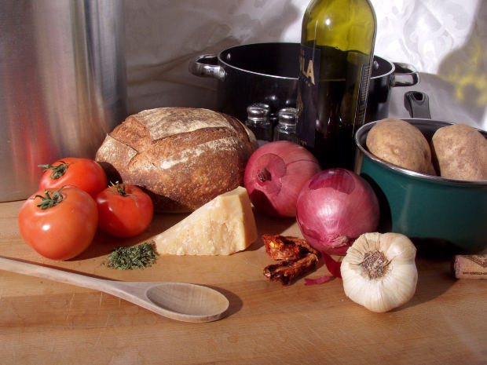
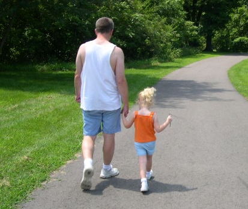
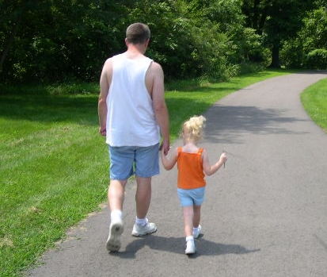

Actividad fisica
La Organización Mundial de la Salud define la actividad física como «todos los movimientos que forman parte de la vida diaria, incluyendo el trabajo, la recreación, el ejercicio y las actividades deportivas».
En este sentido, cuando se habla de actividad física se debe entender este término de manera amplia ya que se refiere no sólo a la práctica de deportes sino también a otras actividades de intensidad variable, como subir escaleras, bailar, cargar las bolsas de las compras y caminar.
Para un adulto que lleva una vida sedentaria, realizar 30 minutos de actividad física de intensidad moderada la mayoría de los días de la semana, es suficiente para prevenir enfermedades.
Dado que no es necesario realizar esta actividad durante 30 minutos seguidos sino que puede repartirse en momentos breves a lo largo del día, es muy sencillo incorporarla a la rutina cotidiana y es una de las maneras más eficaces mejorar la calidad de vida.
La alimentación

La alimentación es producto de un conjunto de factores sociales, económicos y culturales. En este sentido, los hábitos alimentarios de una población se ven influidos en gran medida por la disponibilidad, el costo y la variedad de alimentos, pero también por la costumbre, las creencias, la información que circula acerca de los alimentos y los hábitos alimentarios, los estilos de vida y los grupos de pertenencia, entre otros factores.
Algunos alimentos saludables pueden ser
- Frutas
- Verduras
- Frutos secos y legumbres
- Carnes magras y blancas
- Lacteos
 
